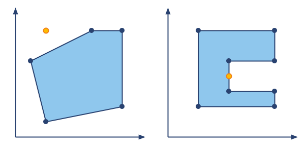

When it comes to city planning it’s import to understand the borders of various city structures. Parks, lakes or living blocks can be represented as closed polygon and can be described using cartesian coordinates on a map . We need functionality to determine is a point (a building or a tree) lies inside the structure.
For the purpose of this mission, a city structure may be considered a polygon represented as a sequence of vertex coordinates on a plane or map. The vertices are connected sequentially with the last vertex in the list connecting to the first. We are given the coordinates of the point which we need to check. If the point of impact lies on the edge of the polygon then it may be considered inside it. For this mission, you need to determine whether the given point lies inside the polygon.
For example, on the left image you see a polygon which is described by ((2,1),(1,5),(5,7),(7,7),(7,2)) and the point at (2,7). The result is False. For the right image the point lies on the edge and gets counted as inside the polygon, making the result True.
Input: Two arguments. Polygon coordinates as a tuple of tuples with two integers each. A checking point coordinates as a tuple of two integers.
Output: Whatever the point inside the polygon or not as a boolean.
Example:
is_inside(((1,1),(1,3),(3,3),(3,1)), (2,2)) == True
is_inside(((1,1),(1,3),(3,3),(3,1)), (4,2)) == False
Precondition:
all(x ≥ 0 and y ≥ 0 for x, y in polygon)point[0] ≥ 0 and point[1] ≥ 0
Solution:
def vector(A, B):
return (float(B[0]-A[0]), float(B[1]-A[1]))
def isClockwise(triangle):
A, B, C = triangle
u, v = vector(A, B), vector(A, C)
return u[0]*v[1] - u[1]*v[0] < 0
def inTriangle(triangle, target):
A, B, C = triangle
u, v, w = vector(A, B), vector(A, C), vector(A, target)
denom = u[0]*v[1] - u[1]*v[0]
x_num = w[0]*v[1] - w[1]*v[0]
if not denom: return not x_num
x_coeff = x_num / denom
y_coeff = (u[0]*w[1] - u[1]*w[0]) / denom
return 0<=x_coeff<=1 and 0<=y_coeff<=1 and 0<=x_coeff+y_coeff<=1
def is_inside(polygon, point):
polygon = list(polygon)
A = sorted(polygon)[0]
A_ix = polygon.index(A)
B, C = polygon[(A_ix+1)%len(polygon)], polygon[A_ix-1]
if not isClockwise((A, B, C)):
polygon = polygon[::-1]
A_ix = polygon.index(A)
polygon = polygon[A_ix:] + polygon[:A_ix]
triangles = []
while len(polygon)>3:
tri, remains = polygon[:3], polygon[3:]
if not any(inTriangle(tri, p) for p in remains) and isClockwise(tri):
triangles.append(tri)
polygon.remove(tri[1])
else:
polygon = polygon[1:] + polygon[:1]
triangles.append(polygon)
return any(inTriangle(tri, point) for tri in triangles)